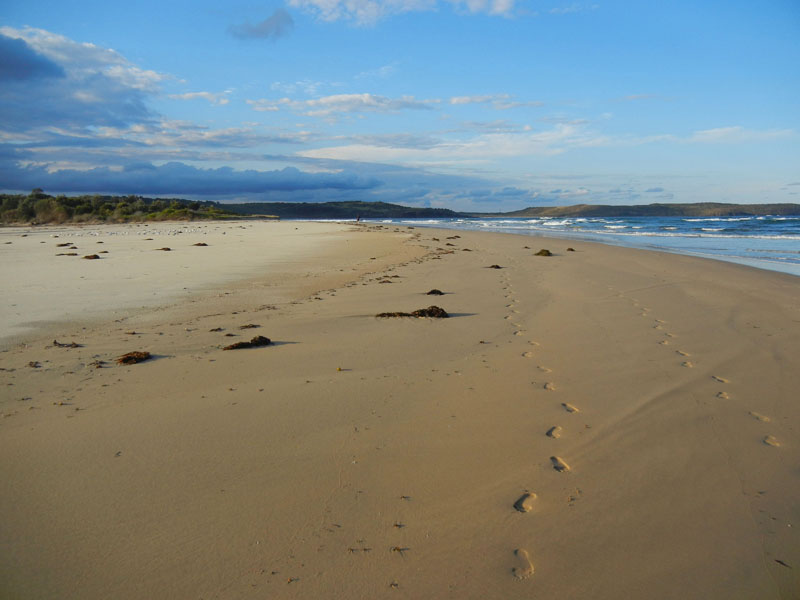
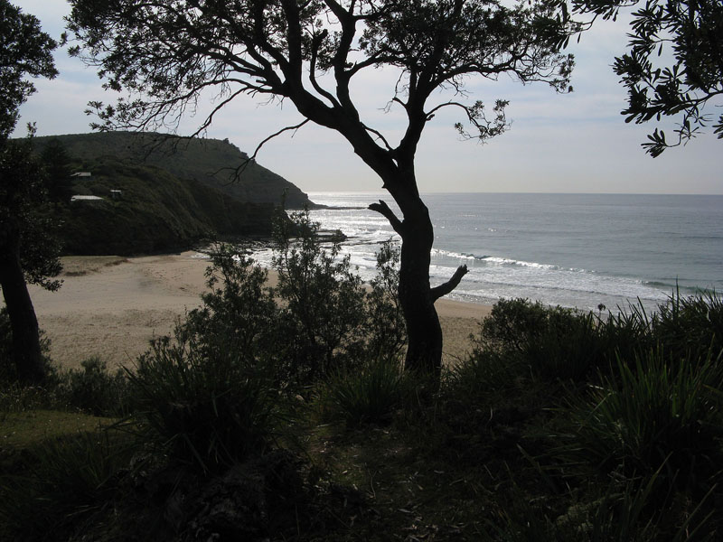
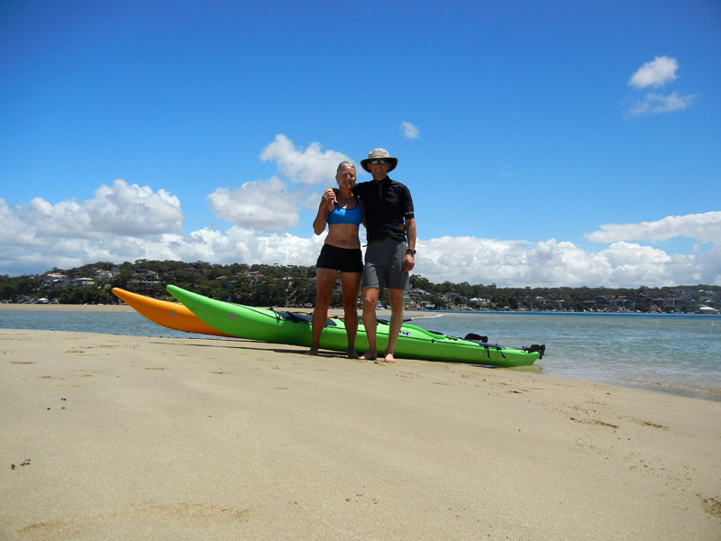

Happy Holidays From A Sunburned Country*The festive season approaches and we have yet to wield a snow shovel or snowblower, and, we are spending more time swimming in a single day than we spent in a single year in Canada, yes, it's summer and Holiday Season in Australia. While leaving the Doghouse and all our wonderful Canadian friends was saddening, Doug and I seem to need a big change at least every ten years, and moving to Australia has proven a big change.  Mystics Beach With the exception of narrow car lanes, and drivers who are overly attached to their car horns, we are enjoying our time in “The Lucky Country.” Doug is still (as is Sandy, truth be told) struggling to understand some of the more broadly accented Aussies, and, saying “Howya goin' mate?” never sounds quite right, but, we are beginning to settle in to the Aussie scene. We've learnt why the Aussies call hiking “bushwalking” as, despite enjoying all the hiking we have done so far, we have found the trails on the bushy side. You can walk for kilometres without seeing your feet as you push through the surprisingly dense (and prickly) Aussie bush. There are literally dozens and dozens of long bushwalks to do in Australia – from scenic coastal walks to mountain treks to wanders along sandstone escarpments. The bird life on these walks – in fact the bird life every where – is simply astonishing. Raucous cockatoos, colourful rosellas, lyrical lyre birds, bell birds and whip birds and dozens more.  Morning At Era Beach On The Coast Walk Sandbagging climbers is a great Australian sport/tradition, and we have certainly been privy to some colossal sandbags on Aussie crags. The climbing itself is excellent, steep, solid sandstone with routes varying from classic jam cracks to jug hauls, to delicate slab climbs on the tiniest holds. If only the Aussies didn't like carrots so much! A week ago we became the owners of two Prijon Marlin sea kayaks and are really enjoying getting back into ocean kayaking, a sport we haven't done since our last visit to Australia 10 years ago. Free from the confines of a double kayak, you can usually find us paddling about a kilometre apart, as Doug explores one shoreline and I the other.  On The Beach At Maianbar With Our New Kayaks
So, from the We wish you and your families a wonderful holiday season and all good things in the New Year. *Apologies to Dorothea MacKellar for a work of rather prosaic prose nowhere close to the brilliance of her poetry. Doug & Sandy. |